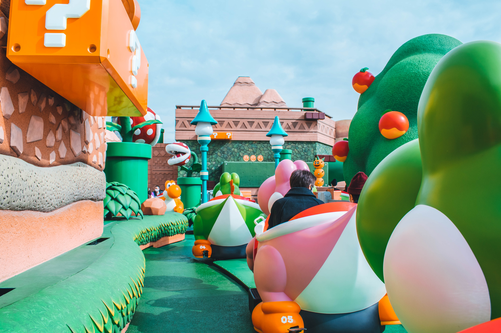
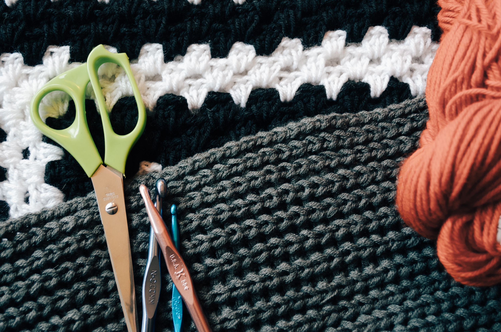
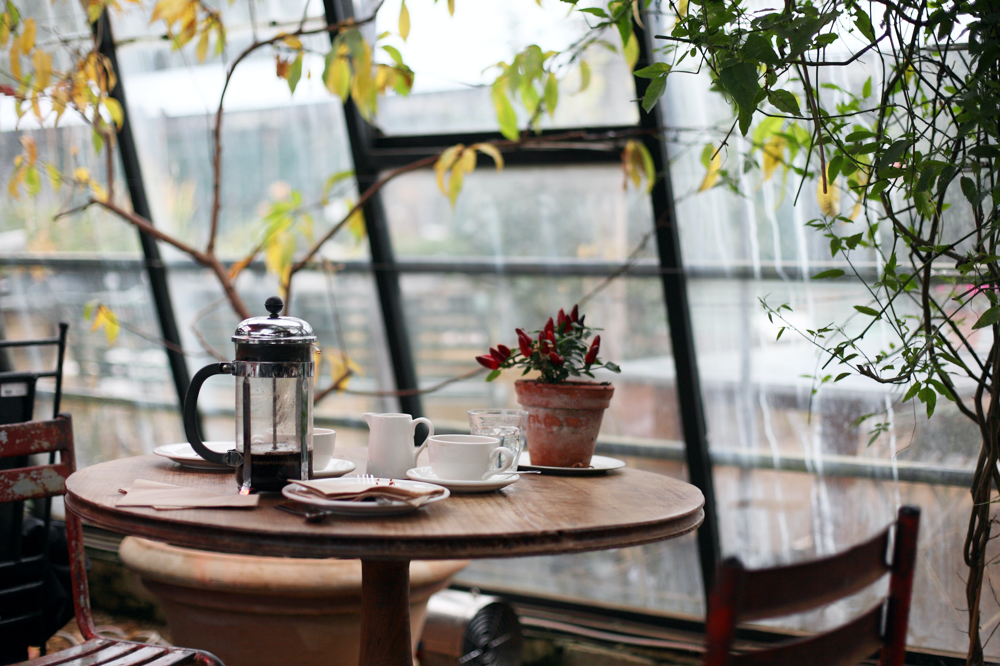

I currently go to Southern New Hampshire University as a Computer Science Major. I also attend the Web Development bootcamp run by Le Wagon.
Click MeI am studying full stack web development through Le Wagon. I am learning Ruby, Rails, and UI/UX. Through my studies at SNHU I am currently learning MYSQL and Python. In the future, I'll be learning more advanced programming and other languages such as Java and C++.
I play games in my free time. My favorite games are Last of Us, Stardew Valley, Coral Island, and FF16. Cute farms, fighting, and zombies.
I previously studied the fine arts. I enjoy painting and drawing. I've recently started crocheting and knitting too.
I love food. If you see me out I'm probably eating. Exploring Japan and finding cool restaurants and cafes is probably my favorite pasttime.
